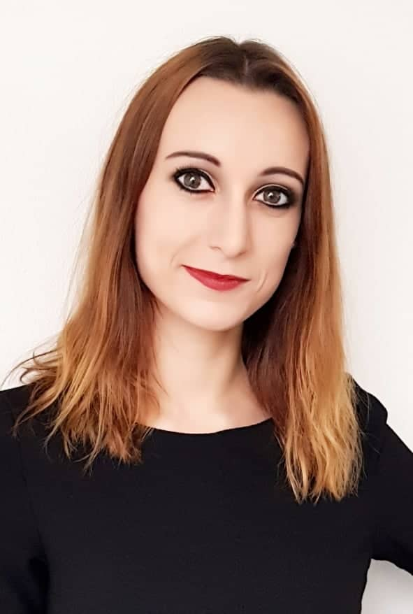

Ing. et Ing. SABÍNA JARÁBKOVÁ
WORK EXPERIENCE
KBC Shared Service Center CZ
May 2021 – present
Business Solution Analyst
KBC Bank & Verzekering
Jan 2021- Apr 2021
Account Manager
KBC Shared Service Center CZ
Apr 2019 – Dec 2020
Main task: Screening and risk profile evaluation of financial institutions based on KYC principles
Materials Research Center, BUT, Faculty of Chemistry
Oct 2016 – Dec 2018
Researcher for Organic Materials – Ph.D. student
JKU – Johannes Keppler Universität Linz
Apr 2018 – May 2018
Internship at the Polymer Science Institute
The aim of the work: Determination of rheological properties of hydrogels
EDUCATION
Brno University of Technology
Faculty of Chemistry – doctoral study program
Sep 2016 – Present
Department: Physical Chemistry
Topic of the dissertation: Hydrogels Based on Cationic Polyelectrolytes
Brno University of Technology
Faculty of Business and Management
Sep 2015 – Jun 2017
Department: Economics and Management
Study completed by state examination – achieved title Ing.
Topic of the diploma thesis: Business Plan Proposal for a Selected Company
Brno University of Technology
Faculty of Chemistry
Sep 2011 – May 2016
Department: Chemistry for Medical Applications
Study completed by state examination – achieved title Ing.
Topic of the diploma thesis: Hydrogels Based on Cationic Polyelectrolytes
PERSONAL TRAITS
- highly responsible and reliable
- well organized
- results oriented
- fast learner
- communicative
- pleasant behaviour
- ability to work under pressure
- ability to work in team
- critical thinking and problem solving
OTHER SKILLS
Driving licence – active driver
HOBBIES
- travelling
- baking
- sport
- walking with my dog
- board games
- puzzles